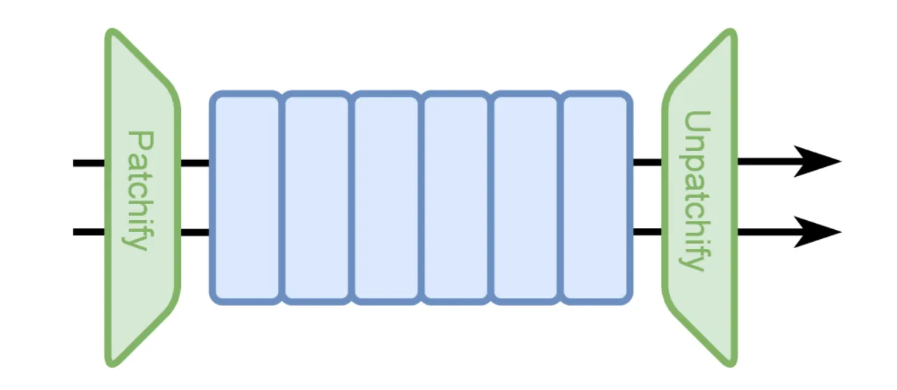
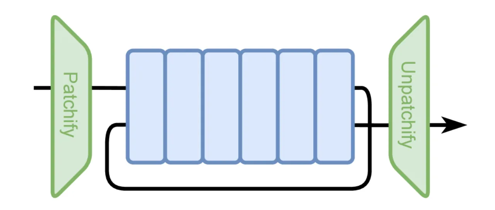
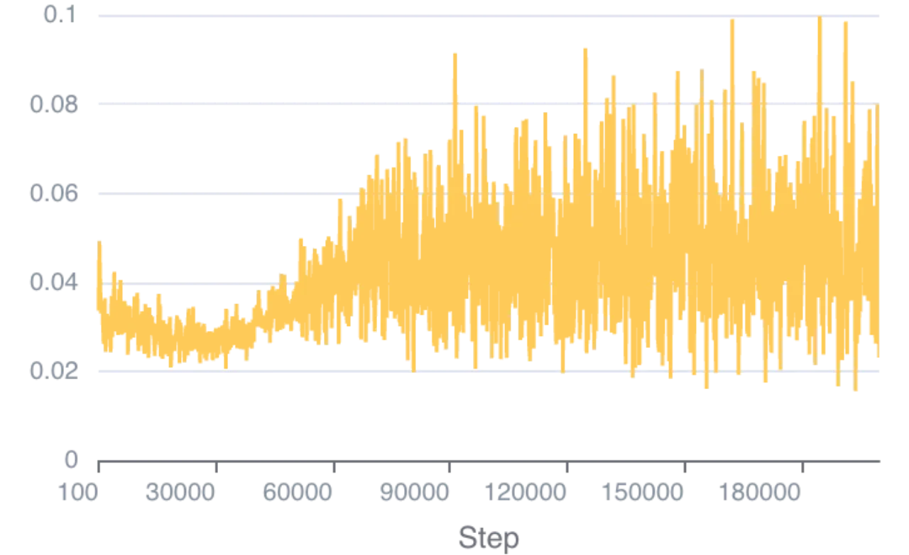
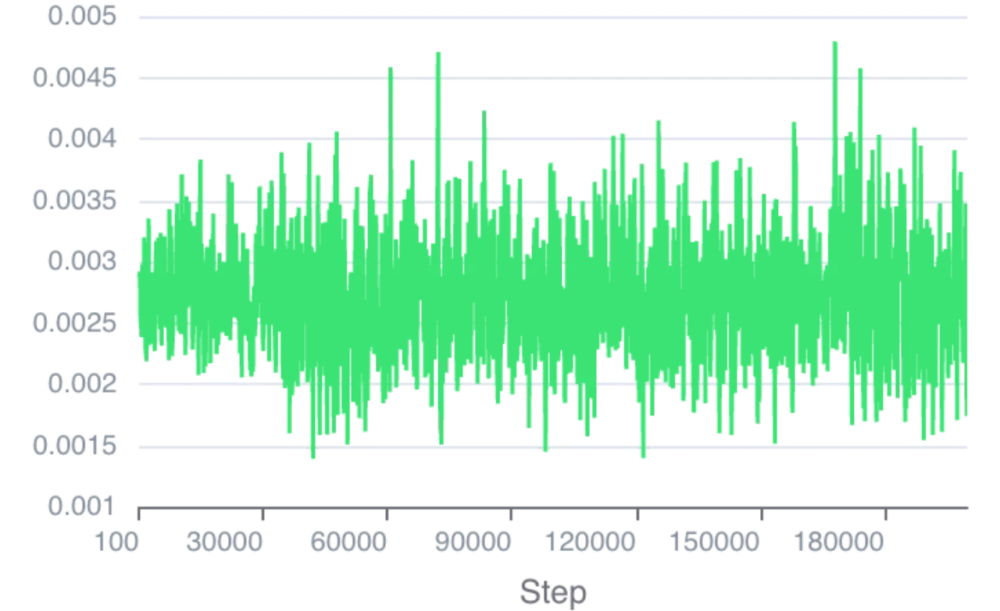
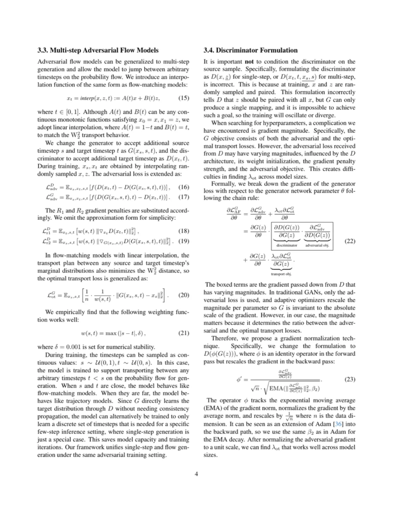
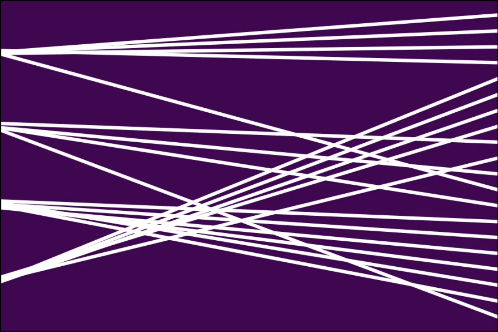
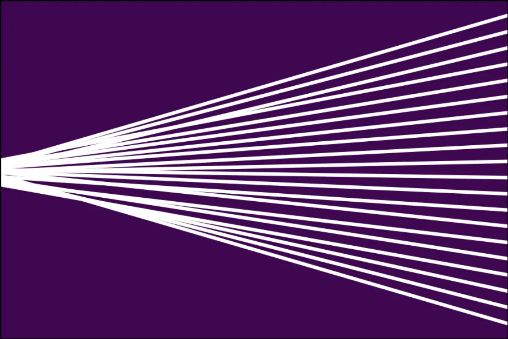
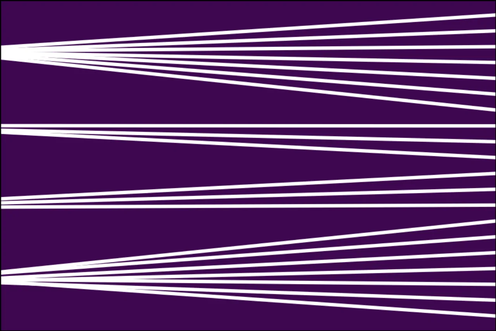

本文提出 Adversarial Flow Models (AFM)，一种同时属于对抗生成网络（GAN）与流匹配（Flow Matching）两大家族的生成模型框架。 通过引入最优传输正则化损失，AFM 将随机噪声确定性地映射为真实数据，从而稳定对抗训练并保留模型容量。 在 ImageNet 256px 单步生成任务上，AFM-XL/2 达到 FID 2.38，超越所有已知的一致性模型； 扩展到 112 层深度架构后进一步取得 FID 1.94，创下新的单步生成最优记录。
现有单步生成方法面临两类核心问题：GAN 训练不稳定，一致性模型（Consistency Models）引入中间时间步监督导致模型容量受限。 作者指出，对抗目标本身无法确定唯一的优化目标，噪声到数据之间存在无穷多条合法的传输路径，导致 GAN 学到任意映射而非确定性最优传输。
"The adversarial objective alone does not define a single optimization target, leaving infinitely many valid transport maps between noise and data distributions."

AFM 的核心思想：在标准 GAN 对抗目标之上，叠加一个二次最优传输正则化损失，利用 Brenier 定理保证存在唯一最优传输映射作为优化目标。 同时引入梯度归一化技术，使大型 Transformer 架构下的训练保持稳定。

根据 Brenier 定理，在二次代价下存在唯一的最优传输映射。AFM 以此为理论基础，对生成器添加 OT 正则化损失：
该损失最小化生成样本与输入噪声之间的总传输距离，将优化方向偏置向唯一最优传输解，而非任意一个 GAN 解。 完整生成器目标为：
在大型 Transformer 架构中，不同模型尺寸下梯度幅度差异显著，导致 λ_ot 超参数难以跨模型复用。 AFM 引入一个恒等算子 φ，在反向传播中对对抗梯度进行归一化：
该技术使对抗梯度的尺度与 OT 正则化梯度保持一致，无需针对每个模型尺寸手动调整超参数。


AFM 可扩展到多步生成：在时间步 t ∈ [0,1] 上做线性插值 x_t = (1−t)·x + t·z，
生成器 G(x_s, s, t) 学习从时间步 s 到 t 的传输，OT 损失相应加权：
为条件生成提供引导，AFM 采用基于流的分类器引导——在随机时间步 t' ~ 𝒰(0, 0.1) 上对插值样本计算分类器梯度， 模拟 Classifier-Free Guidance 的行为，从而在单步模型中也能享受强引导效果：
生成器和判别器均采用标准 Diffusion Transformer（DiT），判别器新增可学习的 [CLS] token 输出 logit。 为提升单步生成质量，作者通过 Transformer Block 重复扩展模型深度，构建 56 层（2×）和 112 层（4×）变体， 无需中间步骤监督即可端到端训练。

所有实验在 ImageNet 256px 上进行，使用预训练 VAE 将图像编码至 32×32×4 潜在空间。 优化器为 AdamW（β₁=0, β₂=0.9），学习率 1×10⁻⁴，批大小 256。 主要评测指标为 FID（越低越好）。
| 方法 | 参数量 | Epoch | 引导方式 | NFE | FID ↓ |
|---|---|---|---|---|---|
| iCT-XL/2 | 675M | — | None | 1 | 34.24 |
| Shortcut-XL/2 | 675M | 250 | CFG | 1 | 10.60 |
| MeanFlow-B/2 | 131M | 240 | CFG | 1 | 6.17 |
| AlphaFlow-B/2† | 131M | 240 | CFG | 1 | 5.40 |
| MeanFlow-XL/2 | 676M | 240 | CFG | 1 | 3.43 |
| TiM-XL/2† | 664M | 300 | CFG | 1 | 3.26 |
| AlphaFlow-XL/2† | 676M | 240 | CFG | 1 | 2.81 |
| GigaGAN | 569M | 480 | Match-loss | 1 | 3.45 |
| GAT-XL/2+REPA† | 602M | 40 | DA+cGAN | 1 | 2.96 |
| StyleGAN-XL | 166M | — | CG+cGAN | 1 | 2.30 |
| AFM-B/2 | 130M | 200 | CG+DA | 1 | 3.05 |
| AFM-M/2 | 306M | 120 | CG+DA | 1 | 2.82 |
| AFM-L/2 | 457M | 120 | CG+DA | 1 | 2.63 |
| AFM-XL/2 | 673M | 125 | CG+DA | 1 | 2.38 |
"our B/2 model surpasses many XL/2 consistency-based models"——AFM-B/2（FID 3.05）超越 MeanFlow-XL/2（FID 3.43）， 以不足五分之一的参数量取得更优结果。
| 方法 | 步数（NFE） | FID ↓ |
|---|---|---|
| AFM-XL/2 | 1 | 2.38 |
| AFM-XL/2 | 2 | 2.11 |
| AFM-XL/2 | 4 | 2.02 |
| 方法 | NFE | FID ↓ |
|---|---|---|
| DiT-XL/2（标准流匹配） | 250 | 9.62 |
| AFM-XL/2 | 1 | 3.98 |
| AFM-XL/2 | 2 | 2.36 |
即使没有分类器引导，AFM-XL/2 单步推理（FID 3.98）也显著优于标准 Flow Matching 250 步推理（FID 9.62）， 说明判别器的感知损失能更好地捕捉数据流形结构。
| 深度 | 参数量 | Epoch | 引导 | NFE | FID ↓ |
|---|---|---|---|---|---|
| 28 层（1×基准） | 675M | 95 | CG+DA | 2 | 2.11 |
| 56 层（2×） | 675M | 95 | CG+DA | 1 | 2.08 |
| 28 层（1×基准） | 675M | 145 | CG+DA | 4 | 2.02 |
| 112 层（4×） | 675M | 120 | CG+DA | 1 | 1.94 |
"surpasses their 28-layer 2-step and 4-step counterparts"——112 层单步模型（FID 1.94）超越 28 层 4 步模型（FID 2.02）， 表明深度可以取代多步骤监督，为提升单步生成质量提供了新方向。



判别器网络大幅增加显存占用，每次迭代需要多次前向传播。 训练时间约为一致性模型的 1.88 倍（相对于 AlphaFlow 的计算量对比）。 这限制了在资源受限环境下的可扩展性。
当前方法采用外部分类器引导（Classifier Guidance, CG）而非 Classifier-Free Guidance（CFG）。 论文指出这是方法的一个技术约束，但同时表明 AFM 的流引导机制在单步模型中模拟了 CFG 的行为。
论文附录详细说明了深度架构训练中存在梯度消失问题，需要专门的梯度归一化（Gradient Normalization）技术加以缓解。 这增加了实现复杂度。
当前框架基于离散时间步，论文结论中提到"continuous-time flow modeling extension"是未来工作方向， 说明当前方法尚不支持连续时间建模，限制了与连续时间流模型的直接对比和融合。
所有定量实验均在 ImageNet 256px 类条件生成任务上进行，未包含文本到图像、视频生成等其他生成任务， 方法在这些场景下的适用性有待验证。